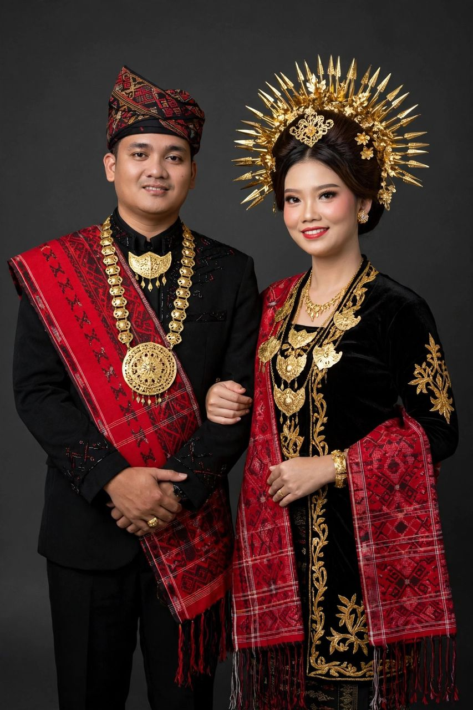

Art Minang 3
Klasik Minangkabau: frame arch, ilustrasi Rumah Gadang, suntiang emas, dan 13 section lengkap.
Lihat UndanganSaranwak · Undangan Digital
Minggu, 14 Februari 2027 · Padang, Sumatera Barat
Pilih tema undangan di bawah ini — ketiganya memakai data yang sama dan bisa dibuka langsung.
Klasik Minangkabau: frame arch, ilustrasi Rumah Gadang, suntiang emas, dan 13 section lengkap.
Lihat Undangan
Teater beludru burgundy: chandelier emas, gramofon, kalender, rundown, dan galeri scrapbook.
Lihat Undangan
Nuansa Batak: ulos, gorga, Rumah Bolon, layout split, drawer gift, dan QR check-in personal.
Lihat Undangan